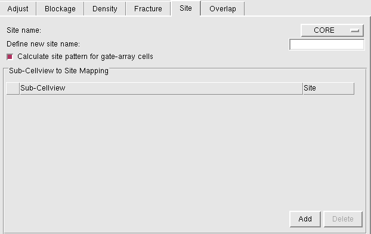
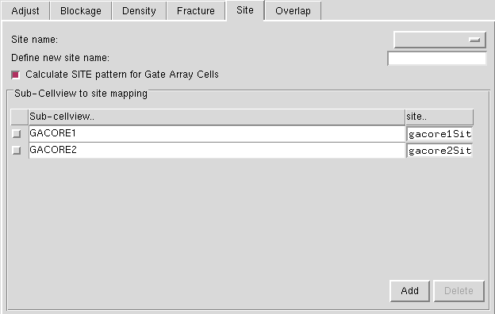

Specifying Sites in Standalone Abstract Generator
Sites tell the placer where it can place cells. All cells located in a particular bin share a common set of properties: symmetry, class (for example, pad or core), width, and height. These properties are used by the placer to assist in the placement process.
These cell properties are defined in a site object, and all cells within the same bin are associated with the same site. The site itself has a name, and the cells in the LEF file contain a site name field that holds the name of the associated site. You can create sites for the Core, IO, Corner bins.
In addition to the site names defined in the technology file, for CORE cells, the <AUTO> option is available in the Site Name cyclic field.
In addition to the site names defined in the technology file, for IO/Corner cells, the <AUTO> and <NONE> options available in the Site Name cyclic field.
Behavior of the <AUTO> option:
- If the layout has an existing site definition, then no default site is created. The site definition from the layout is retained in the final abstract view and is dumped in the LEF file.
- If the layout does not have any site definition, a new default site definition is created and is dumped in the LEF file.
Behavior of the <NONE> option:
- Any existing site definition is removed from the abstract view. So, no site definition is dumped in the LEF file.
- If the layout does not have any site definition, then no new site definition is created. So, no site definition is dumped in the LEF file.
The <NONE> option is not available for CORE cells because CORE cells must have a site definition in LEF file.
To specify sites in the Standalone Abstract Generator:
-
Choose Flow – Abstract, then click the Site tab in the Running step Abstract form.
 - From Site name, select a site name defined in the technology library from the available list to be applied to all cells in the current bin.
- In Define new site name, specify the name of a new site to be used by all cells in the current bin.
-
Use Calculate SITE pattern for Gate-array Cells to derive site patterns from the layout of gate-array standard cells. This option works exclusive of the single site creation fields on the Site tab.
 - Specify the sub-cellview name in the Sub-Cellview column.
- In the site column, the drop-down list displays the already existing sites. Select one from the list to map the selected sub-cellview.
- Click Add to create the mappings. The Add button becomes active when you select the Calculate SITE pattern for Gate Array Cells option.
If a gate-array sub-cellview is itself associated with a site pattern, Abstract Generator preserves the pattern and exports it to LEF.
Related Topics
Return to top